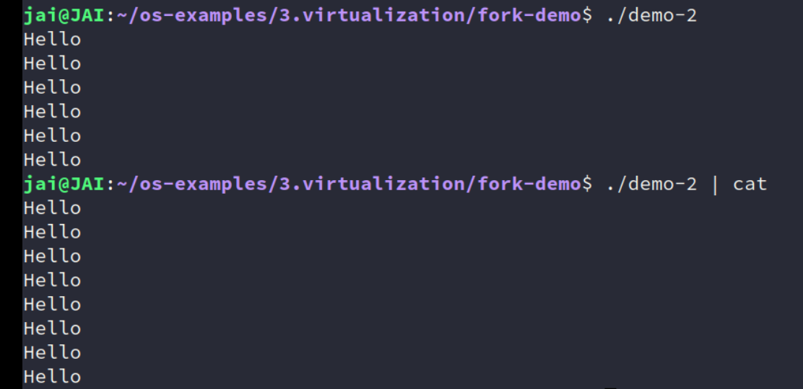
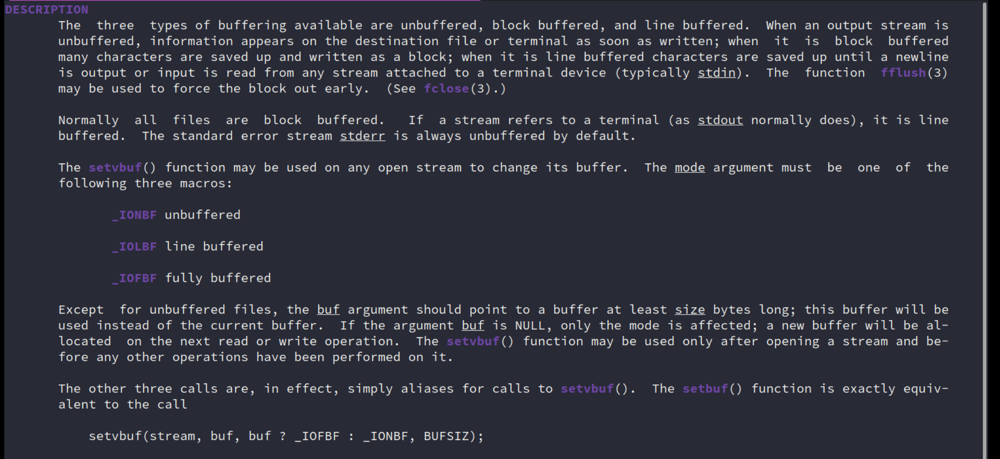
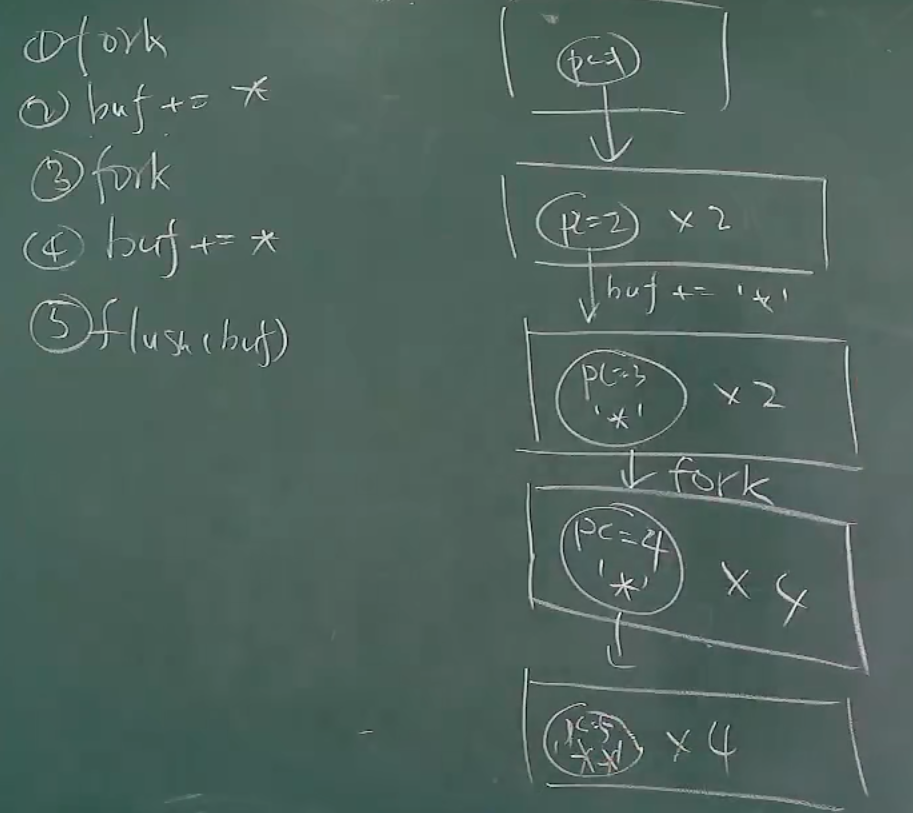
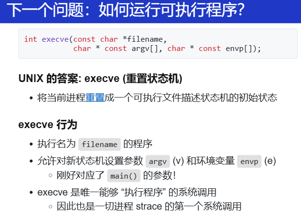
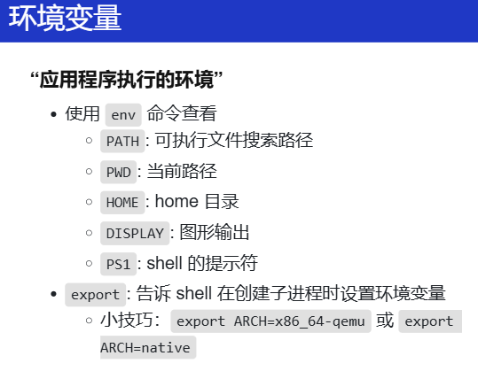
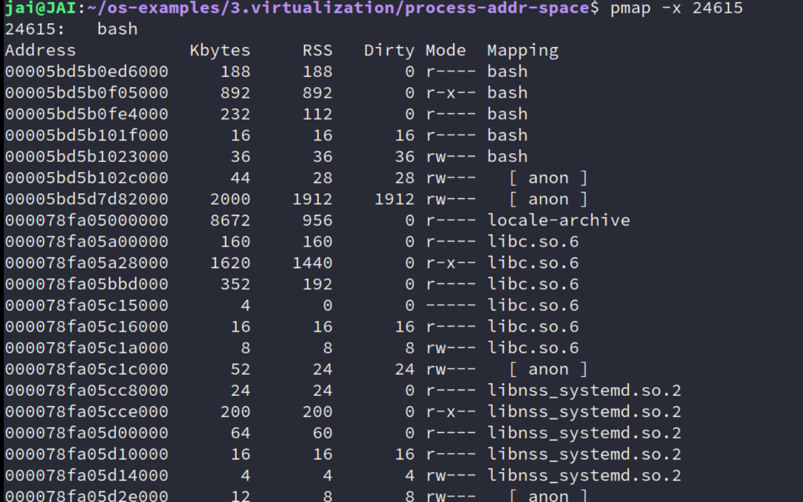
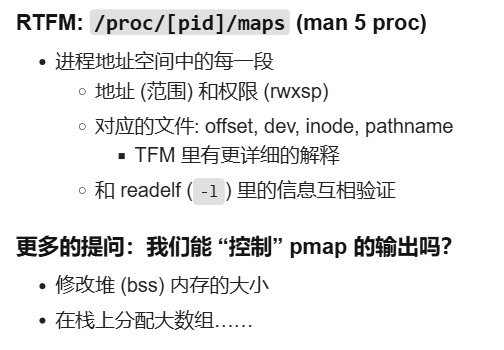
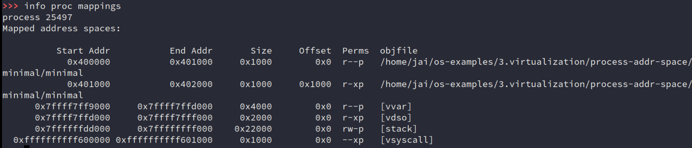
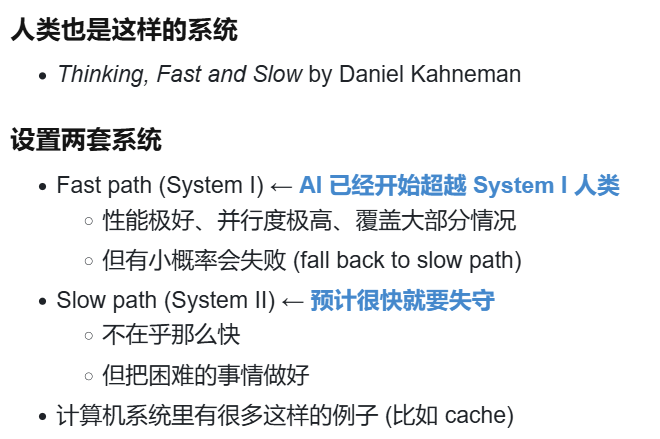

virtualization
来自 DeepSeek
一、虚拟化技术演进路线 & 对应实验
以下是按技术演进顺序整理的核心问题链，每个阶段对应一个实验方向：
1. 进程抽象与隔离
问题：早期计算机只能运行单个程序，如何实现多程序并发执行？
技术演进：
- 进程概念（1960s Multics）：引入进程作为资源隔离单位（CPU、内存、I/O）
- 进程控制块（PCB）：保存进程状态（寄存器、内存映射表等）
- 系统调用：用户态与内核态隔离（如 fork, exec, wait）
实验建议：
- 实现一个简易进程调度器（xv6实验框架）
- 用链表管理PCB，实现 fork 创建进程（仅复制PCB，暂不处理内存）
- 实现时间片轮转调度（触发时钟中断切换进程）
- 关键挑战：上下文切换的寄存器保存与恢复
2. 物理内存管理的局限
问题：多进程直接操作物理内存会导致冲突，如何隔离？
技术演进：
- 分段机制（1960s）：基址寄存器 + 界限寄存器实现逻辑地址到物理地址的映射
- 问题：外部碎片化，内存利用率低
实验建议：
- 实现基于分段的物理内存分配器
- 维护空闲内存块链表（首次适应、最佳适应算法）
- 模拟进程申请/释放内存时的碎片问题
3. 虚拟内存与分页
问题：分段导致外部碎片，如何更细粒度管理内存？
技术演进：
- 分页机制（1970s）：固定大小的页（如4KB），页表映射逻辑地址到物理地址
- 问题：页表过大（如32位地址需4MB页表），访问速度慢
实验建议：
- 实现多级页表（如xv6的两级页表）
- 设计页表项（PTE）结构（Present位、RW位等）
- 处理缺页中断（Page Fault）
4. 地址空间与共享内存
问题：进程间如何安全共享内存（如动态库）？
技术演进：
- 写时复制（Copy-on-Write）：fork 时不复制物理页，共享只读，写时触发缺页中断再复制
- 内存映射文件（mmap）：将文件映射到进程地址空间
实验建议：
- 在进程调度器中实现COW
- 修改 fork 逻辑，标记共享页为只读
- 处理写保护缺页中断，复制物理页
5. 高级调度策略
问题：时间片轮转的公平性问题，如何优化CPU利用率？
技术演进：
- 多级反馈队列（MLFQ）：动态调整进程优先级（交互式进程优先）
- 完全公平调度（CFS）：基于虚拟运行时间分配CPU（Linux默认调度器）
实验建议：
- 在调度器中实现MLFQ
- 设计多优先级队列，动态调整进程优先级
- 统计进程的CPU使用时间和等待时间
6. 中断与并发控制
问题：中断处理与进程调度如何避免竞态条件？
技术演进：
- 关中断：简单但破坏实时性
- 自旋锁（Spinlock）：忙等待，适用于短临界区
- 信号量（Semaphore）：阻塞等待，适用于长临界区
实验建议：
- 实现自旋锁和信号量
- 使用原子指令（如x86的 xchg）实现锁
- 用等待队列管理阻塞进程
二、推荐实验项目
以下项目按难度递增排序，建议结合演进路线选择阶段实验：
- xv6 Labs（MIT 6.1810）
- 官网：https://pdos.csail.mit.edu/6.828/2023/xv6.html
- 特点：代码简洁（约1万行），适合理解核心机制（进程、内存、文件系统）
-
推荐实验：
syscall,pgtbl,cow,thread,lock -
PintOS（Stanford CS140）
- 官网：https://web.stanford.edu/class/cs140/projects/pintos/
- 特点：更贴近现代OS设计（支持多线程、用户态），难度中等
-
推荐实验：
Threads,User Programs,Virtual Memory -
JOS（MIT 6.828）
- 官网：https://pdos.csail.mit.edu/6.828/
- 特点：从零构建一个Unix-like内核，涵盖虚拟内存、进程隔离、文件系统
三、学习资源推荐
书籍与文档
- 《Operating Systems: Three Easy Pieces》（OSTEP）
- 虚拟化部分：https://pages.cs.wisc.edu/~remzi/OSTEP/
-
重点章节：5-10章（进程）、13-21章（内存）、25-33章（并发）
-
《Linux内核设计与实现》（Robert Love）
-
实践导向，讲解Linux调度、内存管理、中断处理的核心实现
-
蒋炎岩老师的课程资料
- B站公开课：https://www.bilibili.com/video/BV1Cm4y1d7Ur
- 配套实验：https://nju-projectn.github.io/ics-pa-gitbook/
技术文章与论文
- 《The Evolution of the Unix Time-sharing System》（Dennis Ritchie）
-
理解Unix设计哲学：https://www.bell-labs.com/usr/dmr/www/hist.pdf
-
《Melting the Snowflake in Your Laptop》（Linux内存管理）
- 图解Slab/Slub：https://events.static.linuxfound.org/sites/events/files/slides/slaballocators.pdf
四、学习建议
- 从简到繁：先通过xv6理解基础机制，再挑战PintOS/JOS的复杂设计
- 代码精读：重点阅读Linux内核的
mm/（内存管理）和kernel/sched/（调度）目录 - 调试工具：熟练使用QEMU+GDB调试内核，理解硬件与软件的交互细节
如果有具体技术点需要深入讨论（如页表实现细节或锁的优化），欢迎随时交流！
操作系统上的进程
第一个进程
- 操作系统的启动
- Firmware 阶段
- CPU Reset 后，Firmware 代码开始执行
- 加载操作系统
- 操作系统初始化阶段
- 操作系统扫描系统中的硬件、初始化数据结构……
- 加载第一个进程 (状态机)
- 操作系统执行阶段
- 状态机在 CPU 上执行
- 允许执行 syscall 进入操作系统代码
- Firmware 阶段
创建新进程
fork 做了什么？立即复制状态机
- 包括==所有信息==的完整拷贝
- 每一个字节的内存
- 打开的文件 (共享)
- ……
- 复制失败返回 -1
- errno 会返回错误原因 (man fork)
如何区分两个状态机？
- 新创建进程返回 0
- 执行 fork 的进程返回子进程的进程号
总结：fork() 会完整复制状态机；新创建的状态机返回值为 0，执行 fork() 的进程会返回子进程的进程号。同时，操作系统中的进程是并行执行的。程序的精确行为并不显然——model checker 可以帮助我们理解它。
fork 配合 printf
-
example1
pid_t x = fork(); pid_t y = fork(); printf("%d %d\n", x, y);- 到底创建了几个状态机？
- pid 分别是多少？
- “状态机视角” 帮助我们严格理解
这里不解释，这里之前在简单学习Linux系统编程的时候，画过图，原来那时候已经懵懂地使用了状态机的思想。
但由上面的例子，也能看出 操作系统内核就是最早的并发程序，
-
example2
for (int i = 0; i < 2; i++) { fork(); printf("Hello\n"); } // 展开 // 第一次循环 fork printf // 第二次循环 fork printf状态机视角帮助我们严格理解程序行为
-
./a.out -
./a.out | cat
两种结果不对？不应该都是6次？
说明哪里有问题
- 计算机系统里没有魔法
- (无情执行指令的) 机器永远是对的
既然循环展开没问题，
fork讲的也没问题，那问题是什么？管道？printf？。。。。究竟还有什么复制了？记得，计算机的任何内容，到计算机底层，最终都会变成非常非常小的行为，因为最终执行的是指令！还是那句话，冤有头债有主！这样会有理有据根据底层知识地“猜”
还记得之前学习过的输出输入流的缓冲吗？

为了性能，都是fully buffered，而终端是默认 line buffered。
实际上也和libc的实现也是有关的，如果是自己实现的klib，那最终也是6次。
具体状态迁移图。
其中有一个重点就是，buffer是在每一个进程中的，记得了吗？fork复制完整的状态机，所有的信息！这你就知道了！
所以理解就是，
printf的时候，是往这个buffer里去写，fork复制的时候，这个buffer也会被复制。
-
fully buffered 就是8个了喔！管道导致标准输出变为全缓冲模式，printf 的 Hello\n 不会立即刷新，而是暂存在缓冲区。
真正搞明白，记住了，fork 是复制整个进程地址空间的内容，all！所以你知道的不知道的。
所以，当遇到某个和你认为中不符的现象，肯定是哪个状态不对或者自己脑海中理解的模型不对。
突发奇想，DeepSeek-R1能做对吗？还真可以！可能这题太简单了，只是我们不知道这个机制
答案分析：
情况1：直接运行
./a.out执行流程与输出分析
初始进程
P0：
i=0：调用fork()生成子进程P1。P0和P1均执行printf("Hello\n")。- 输出：
Hello（来自P0和P1，共 2 次）。进入
i=1循环：
P0和P1各自再次调用fork()，生成子进程P2、P3、P4、P5（实际为 4 个进程）。- 所有进程（
P0、P1、P2、P3）执行printf("Hello\n")。- 输出：
Hello（来自 4 个进程，共 4 次）。总输出次数：
- 2（第一次循环） + 4（第二次循环） = 6 次。
关键机制
- 行缓冲模式：当标准输出直接连接到终端时，
printf默认使用行缓冲（\n会触发立即刷新）。- 无缓冲区残留：每次
printf后换行符强制刷新缓冲区，fork()不会复制未刷新的数据。
情况2：通过管道运行
./a.out | cat执行流程与输出分析
缓冲模式变化：
- 管道导致标准输出变为全缓冲模式，
printf的Hello\n不会立即刷新，而是暂存在缓冲区。进程复制与缓冲区继承：
- 每次
fork()会复制父进程的未刷新缓冲区。- 具体流程：
- 第一次循环
i=0：
P0调用fork()生成P1。P0和P1的缓冲区均暂存Hello\n（未输出）。- 第二次循环
i=1：
P0和P1再次调用fork()，生成P2、P3、P4、P5。- 所有进程的缓冲区继承父进程内容，此时每个进程的缓冲区包含
Hello\n（第一次循环）。- 每个进程执行第二次
printf("Hello\n")，缓冲区追加第二个Hello\n。- 进程退出时：全缓冲区的数据被强制刷新，每个进程输出
Hello\nHello\n。总输出次数：
- 每个进程输出 2 次，4 个进程 × 2 = 8 次。
关键机制
- 全缓冲模式：管道导致
printf使用全缓冲，数据暂存不立即输出。- 缓冲区继承：
fork()复制父进程的未刷新缓冲区，子进程拥有相同内容。- 叠加输出：每个进程的缓冲区在退出前累积两次
Hello\n，最终输出双倍。
状态机对比 | 操作 |
./a.out（行缓冲） |./a.out | cat（全缓冲） | | ---------------- | -------------------- | ------------------------- | | 第一次循环后 | 缓冲区已刷新，无残留 | 缓冲区残留Hello\n| | 第二次循环后 | 缓冲区已刷新，无残留 | 缓冲区残留两个Hello\n| | 进程退出时 | 无操作 | 强制刷新缓冲区，输出两次 |
总结 - 直接运行：行缓冲确保每次
printf后立即输出，总次数为 6。 - 管道运行：全缓冲导致fork()复制未刷新缓冲区，最终输出翻倍至 8。
运行可执行文件
接着 fork 创建状态机，那状态机总得跑起来！

关键：重置。重置到初始状态。
那为什么不统一成一个？真有点奇怪。。不懂那时候的设计。
Spawn = fork() + execve()。那写代码变成这样：
int pid = fork();
if (pid == -1) {
perror("fork"); goto fail;
} else if (pid == 0) {
// Child
execve(...);
perror("execve"); goto fail;
} else {
// Parent
...
}
-
环境变量

export: 告诉 shell 在创建子进程时设置环境变量这个做实验的时候就在用！但是实际上是这么个原理！
这个设计，还真的是无处不在。究竟怎么理解？之前做 PA 的感觉：要运行某个程序，然后输入这个的所在目录的全称然后找到它，为了方便，就把这个目录添加到一个地方，然后每次OS运行程序的时候，都会区这些目录寻找这些程序。应用程序执行的环境，这名字确实挺好。
-
例子：
PATH环境变量
从上面状态机的理解：
execve重置，那就是要准备一些初始状态：argc, argv, envp再问问 DeepSeek
说实话，现在已将养成习惯，遇到一些不懂不会的内容，先用自己的理解说一遍，然后再用 LLM，配合找一些资料，让他总结，我发现LLM做一些事实性的东西真的是不太会出错的。
另一种想法：在做代码实验、开发的时候，我想明白这些设计，明白用哪些接口写，然后再用 LLM 帮我写，这样的效率我觉得很高！
环境变量是操作系统中一个非常关键的设计概念，它的本质是 动态配置数据的全局存储机制，用于在程序运行时传递参数或控制程序行为。它的设计核心可以用一句话概括：将配置与代码分离，通过外部环境动态控制程序行为。
- 从「运行程序」的场景理解环境变量
以
PATH环境变量为例，它的设计解决了以下问题：- 路径依赖问题
如果每次运行程序都要输入完整路径（如/usr/bin/ls），用户体验极差。 - 集中管理路径
将常用路径统一存储在PATH中，操作系统自动搜索这些路径，避免重复输入。 - 动态配置
用户可以根据需要随时修改PATH，无需重新编译程序或修改系统代码。
- 路径依赖问题
设计实现的关键点： - 存储结构：环境变量通常以键值对（
KEY=value）形式存储，例如PATH=/usr/bin:/usr/local/bin。 - 作用范围：环境变量是进程级别的，每个进程继承自父进程的环境变量副本。 - 查找规则：当执行命令时，操作系统按PATH中定义的目录顺序搜索可执行文件。
-
环境变量的底层设计原理*
-
操作系统如何存储环境变量？
-
进程内存模型：
在 Unix/Linux 系统中，每个进程启动时，环境变量以字符串数组形式存储在进程内存的 环境段（Environment Segment） 中。例如：char *envp[] = {"PATH=/usr/bin", "USER=alice", NULL}; -
继承机制：
通过fork()创建子进程时，子进程会复制父进程的环境变量；通过exec()执行新程序时，可以选择保留或重置环境变量。
-
-
环境变量的操作接口
- 读取环境变量：
通过 C 标准库函数getenv("PATH")获取值。 - 设置环境变量：
使用setenv("PATH", "/new/path", 1)（覆盖）或putenv("PATH=/new/path")。 - 命令行操作：
在 Shell 中通过export PATH=/new/path（Linux）或set PATH=C:\new\path（Windows）临时修改。
- 读取环境变量：
-
环境变量的设计哲学
- 解耦配置与代码：
程序行为不再硬编码在代码中，而是通过外部环境动态调整。例如：LANG=zh_CN.UTF-8控制程序语言环境。http_proxy=http://proxy:8080控制网络代理。
- 分层作用域：
- 系统级环境变量：影响所有用户（如
/etc/environment）。 - 用户级环境变量：仅影响当前用户（如
~/.bashrc）。 - 进程级环境变量：仅在当前进程生效（通过代码设置）。
- 系统级环境变量：影响所有用户（如
- 解耦配置与代码：
-
-
环境变量的实际应用场景
-
程序路径搜索（PATH）
-
问题：如何让系统找到用户安装的非标准路径程序？
-
解决方案：将自定义路径加入
PATH：export PATH="$PATH:/my/custom/bin"此后，直接输入
my_program即可运行/my/custom/bin/my_program。
-
-
开发环境配置
-
场景：同一台机器上需要多个版本的 Python（Python 2.7 和 Python 3.9）。
-
解决方案：通过环境变量切换版本：
export PATH="/opt/python3.9/bin:$PATH" # 优先使用 Python 3.9
-
-
调试与日志控制
-
场景：控制程序输出调试信息。
-
解决方案：通过环境变量开关：
DEBUG=1 ./my_app # 程序内部检查 DEBUG 变量决定是否打印日志
-
-
容器化与云原生
-
场景：在 Docker/Kubernetes 中传递数据库密码、API 密钥等敏感信息。
-
解决方案：通过环境变量注入配置：
# Kubernetes Pod 配置 env: - name: DB_PASSWORD valueFrom: secretKeyRef: name: db-secret key: password
-
-
-
环境变量与安全
-
敏感信息泄露风险
- 问题：环境变量对所有子进程可见，可能导致密码泄露。
- 解决方案：避免通过环境变量传递敏感信息，改用加密文件或密钥管理服务（如 Vault）。
-
路径劫持攻击
-
问题：恶意用户篡改
PATH，将ls指向恶意程序。 -
解决方案：确保
PATH不包含当前目录（.），并限制权限：export PATH="/usr/bin:/bin" # 不包含当前目录
-
-
- 从设计模式看环境变量
环境变量的设计体现了以下模式：
- 全局上下文（Global Context）：
提供一个统一的配置入口，避免参数层层传递。 - 依赖注入（Dependency Injection）：
将外部依赖（如文件路径、服务地址）动态注入程序。 - 松耦合（Loose Coupling）：
程序行为不再硬编码，而是依赖外部环境。
- 全局上下文（Global Context）：
-
总结
- 环境变量的设计是操作系统对 动态配置管理 的优雅解决方案。它通过键值对存储、进程继承机制和全局访问接口，实现了以下目标：
- 灵活性：允许外部动态修改程序行为。
- 解耦：分离代码逻辑与运行时配置。
- 标准化：提供统一的配置管理方式，适用于所有程序。
理解环境变量后，可以更高效地管理系统配置、调试程序，并设计出更灵活的软件架构。
-
退出程序
fork + exec = 自由执行任何程序
- 还差一个销毁状态机的函数就完整了
- UNIX 的答案:
_exit- 立即摧毁状态机，允许有一个返回值
-
子进程终止会通知父进程 (后续课程解释)
-
但问题来了：多线程程序怎么办？
退出是推出一个进程中所有的线程，还是就退出那一个线程？
exit 的几种写法 (它们是不同)
-
exit(0)
- 会调用 atexit
-
_exit(0)
-
执行 “exit_group” 系统调用终止整个进程 (所有线程)
- 细心的同学已经在 strace 中发现了
-
会调用 atexit 吗？
atexit 是一个libc 函数，那就是依赖于系统调用咯？
那如果直接用系统调用，不用libc的库，那libc就不管啦！
asm volatile("mov ..., %rax; syscall");
-
-
syscall(SYS_exit, 0)
- 执行 “exit” 系统调用终止当前线程
- 会调用 atexit 吗？
更进一步：
if (strcmp(argv[1], "_exit") == 0) {
// This is an immediate operating system exit.
// This _exit() is provided by libc.
_exit(0);
}
if (strcmp(argv[1], "__exit") == 0) {
// This is an even more "operating system" exit.
syscall(SYS_exit, 0);
}
这两种exit的区别？在状态机上有什么区别？
第一想法应该使用 strace 去分析整个程序的内容！（对于一个 OS 上的程序）

但这是为什么呢？一个退整个进程，一个退一个线程？DeepSeek！
Summary
fork/execve/exit
凭着这三个系统调用，OS就能做很多事情。
fork：复制状态机
execve：重置状态机
exit： 销毁状态机
我就能构建很多个状态机！很多个进程！构建了进程树！pstree的缘由！
那由此回答什么是 OS：很多个状态机的管理者！但同时它也是一个状态，他也有部分状态，而 OS 要做的内容就是凭借着自己的部分状态，把各个进程树在 OS 中建立起来！pstree（M1）/实际中内核的 struct proc，建立起来之后，凭着自己掌控的大量内存，借助内存管理算法（L1），每当进程需要内存的时候，那就从内存分配器拿一部分给进程！
所以！OS 理解就是一个大的树结构。
老师举了一个例子：人：进程，物理世界就是 OS ，OS 做的就是把我们大家都剪碎打乱了，放到一个放库（内存，当OS 要一个进程需要的时候，再把这个人拼起来！因为存在系统调用，进程请求某些内容，然后执行权交给 OS，OS 把进程丢回仓库，最终 OS 执行完相关代码后，再把人拼起来（当然得知道从哪里拼）！
(入侵) 进程的地址空间
(mmap; 实现金山游侠、按键精灵、变速齿轮)
地址空间
什么时候读取的p是合法？Linux进程的地址分布？那些读取不会segmentation fault？
进一步，进程地址空间是什么？0到264 -1 的平坦序列。
进一步，就是Linux的进程地址空间内容，怎么查看？DeepSeek
-
/proc/[pid]/maps回想一下第一个 M1 的内容，这里面的内容不经意间就看到了。
-
pmap命令工具更常用。

也能看出一些内容，比如第二行的那个
r-x的bash，这实际就是我们的bash的源码；那些
但是怎么实现的？
cat /proc/[pid]/maps | xxx(解析这个文件) -
gdbinfo proc mappings基本和pmap一样。看看自己写的程序
接着？把maps文件的内容都玩个遍？！验证老师说的是不是对的！交给 AI 总结吧！
加大一个10M的数组，看看大小

再来看个简单的：minimal的地址空间的内容。

探索一下
vvar、vdso。。。那就是拓展。
vdso: 进程的地址空间中有一些 “神秘” 的映射——当然，如果你阅读文档或询问 AI，它们的秘密也会被解开：“只读” 的系统调用可以通过与操作系统共享页面实现。vdso 就是实现这一点的机制。
mmap
继续主线的探索，进程的地址空间：连续的内存，梅一段内存都有读写执行...
但是从 系统调用 execve 重置得到的初始进程状态：寄存器、大段内存...
有一个问题？这些初始状态能不能改？怎么改？
肯定有一条指令改变这个进程地址空间，应该有一个系统调用，帮助我们增删改地址空间。mmap
理解：在状态机状态上增加/删除/修改一段可访问的内存
MAP_ANONYMOUS: 匿名 (申请) 内存fd: 把文件 “搬到” 进程地址空间中 (例子：加载器)- 更多的行为请参考手册 (复杂性暴增)
// 映射
void *mmap(void *addr, size_t length, int prot, int flags,
int fd, off_t offset);
int munmap(void *addr, size_t length);
// 修改映射权限
int mprotect(void *addr, size_t length, int prot);
再次交给 DeepSeek 看看？
匿名映射（
MAP_ANONYMOUS）
用途：动态分配堆内存（替代
malloc的大块分配）。特点：
- 无文件关联，内存内容初始化为零。
- 物理内存按需分配，通过
munmap释放后立即归还系统示例：
C // 分配 1GiB 匿名内存（仅虚拟地址，物理内存按需分配） void *mem = mmap(NULL, 1 << 30, PROT_READ | PROT_WRITE, MAP_PRIVATE | MAP_ANONYMOUS, -1, 0);文件映射（指定
fd）（感觉这个是常用的？）
- 将文件内容映射到内存，实现高效文件 I/O。
- 动态链接库加载（如
.so文件）。特点：
- 文件内容按需加载（访问时触发缺页中断，从磁盘读取）。
- 修改可同步回文件（
MAP_SHARED模式）。示例：
# Python 示例：映射磁盘文件并读取前 512 字节 with open('/dev/sda', 'rb') as fp: mm = mmap.mmap(fp.fileno(), length=128<<30, prot=mmap.PROT_READ) print(hexdump(mm[:512])) # 仅实际读取 512 字节到物理内存以下是使用
mmap将文件映射到进程地址空间的详细示例和解析。我们通过一个具体的 C 代码示例，展示如何将文件内容映射到内存中，并直接通过指针操作文件内容。
C 代码示例：文件映射与内存操作
#include <stdio.h> #include <sys/mman.h> #include <sys/stat.h> #include <fcntl.h> #include <unistd.h> #include <string.h> int main() { const char *file_path = "example.txt"; const size_t file_size = 4096; // 映射 4KB 文件内容 // 1. 打开文件（若不存在则创建，权限为可读写） int fd = open(file_path, O_RDWR | O_CREAT, 0666); if (fd == -1) { perror("open"); return 1; } // 2. 调整文件大小（确保文件足够大） if (ftruncate(fd, file_size) == -1) { perror("ftruncate"); close(fd); return 1; } // 3. 将文件映射到内存（PROT_READ | PROT_WRITE 可读写，MAP_SHARED 修改同步到文件） void *addr = mmap( NULL, // 由内核选择映射地址 file_size, // 映射长度 PROT_READ | PROT_WRITE, // 内存可读可写 MAP_SHARED, // 修改会同步到文件 fd, // 文件描述符 0 // 文件偏移量（从文件头部开始映射） ); if (addr == MAP_FAILED) { perror("mmap"); close(fd); return 1; } // 4. 通过内存指针直接操作文件内容 printf("文件已映射到内存地址: %p\n", addr); // 写入数据到内存（自动同步到文件） const char *message = "Hello, mmap!"; strncpy((char *)addr, message, strlen(message)); // 读取并打印内存中的数据 printf("文件内容: %s\n", (char *)addr); // 5. 解除映射并关闭文件 if (munmap(addr, file_size) == -1) { perror("munmap"); } close(fd); return 0; }
打开文件
int fd = open("example.txt", O_RDWR | O_CREAT, 0666);
- 作用：以读写模式打开文件（若文件不存在则创建）。
- 权限：
0666表示文件对所有用户可读写。调整文件大小
ftruncate(fd, 4096); // 将文件大小设为 4KB
- 必要性：
mmap要求文件大小至少等于映射长度。若文件较小，需先扩展。映射文件到内存
void *addr = mmap(NULL, 4096, PROT_READ | PROT_WRITE, MAP_SHARED, fd, 0);参数解析：
NULL：由内核自动选择映射的起始地址。4096：映射长度（必须 ≤ 文件大小）。PROT_READ | PROT_WRITE：内存可读可写。MAP_SHARED：修改会同步到文件（若需私有副本，使用MAP_PRIVATE）。fd：已打开的文件描述符。0：从文件头部开始映射。通过指针操作文件内容
strncpy((char *)addr, "Hello, mmap!", strlen("Hello, mmap!")); printf("文件内容: %s\n", (char *)addr);
- 直接访问：通过指针
addr读写内存，等同于操作文件内容。- 同步机制：使用
MAP_SHARED时，修改会由内核自动同步到文件（无需手动调用write）。解除映射
munmap(addr, 4096); // 释放映射 close(fd); // 关闭文件必要性：
munmap释放虚拟内存资源，close关闭文件描述符。
文件映射的核心机制
虚拟内存与物理内存的分离
- 虚拟地址空间：进程通过
addr访问的是一段连续的虚拟内存。- 物理内存按需加载：首次访问某内存页时，内核触发缺页中断，将文件对应部分加载到物理内存。
文件同步
写回策略：
MAP_SHARED：修改会通过内核的页缓存（Page Cache）同步到文件。MAP_PRIVATE：修改仅影响进程内的私有副本，不改变原文件。性能优势
- 零拷贝：文件内容直接映射到用户空间，避免
read/write的多次数据拷贝。- 高效随机访问：无需
lseek，直接通过指针跳转到任意位置。
实际应用场景
高效处理大文件
// 映射 1GB 文件（仅需虚拟地址空间，物理内存按需加载） void *addr = mmap(NULL, 1<<30, PROT_READ, MAP_PRIVATE, fd, 0);
- 优势：即使物理内存不足，程序仍可正常运行（依赖交换空间）。
动态链接库加载
- 加载器行为：当运行
./a.out时，Linux 动态链接器（ld.so）通过mmap将.so文件的代码段映射到进程地址空间。- 权限控制：代码段映射为
r-xp（可读、可执行、私有），数据段为rw-p（可读写、私有）。进程间共享内存
// 共享内存示例（不同进程映射同一文件） void *addr = mmap(NULL, size, PROT_READ | PROT_WRITE, MAP_SHARED, fd, 0);用途：多个进程通过映射同一文件实现数据共享。
对比传统文件 I/O
操作 mmap文件映射read/write数据拷贝 零拷贝（直接访问内存） 需从内核缓冲区拷贝到用户空间 随机访问 直接指针跳转 需 lseek调整文件指针适用场景 大文件、频繁随机访问 小文件、顺序读写 同步控制 自动同步（MAP_SHARED） 需手动调用 fsync
总结：通过
mmap将文件映射到进程地址空间，本质是 将文件内容与虚拟内存建立映射关系。这一机制的核心优势在于：
- 性能高效：减少数据拷贝和系统调用次数。
- 编程简化：直接通过指针操作文件内容。
- 内存管理灵活：支持按需加载和透明换页。
理解
mmap后，可以更高效地处理文件 I/O、实现共享内存，甚至优化程序启动速度（如动态库加载）。
有一篇学习：如何判定一段内存地址是不可访问的？ - 知乎
入侵地址空间
怎么知道哪个是”金钱“？
一切都是状态机，改变一下游戏里钱的数目，相当于改变状态了，再去地址空间找找？？谁变了？自己想出来的！！
其实有点像并发里面的动态分析工具。
老师怎么做的？遍历虚拟机的进程地址空间（怎么遍历？）
实际上实现了一个调试器，gdb也能做到！
实现：
给进程发送 GUI 事件
这个好像那种 AI 识别做什么，然后弄一些比较好玩的东西。配合嵌入式？
好像微软最近就推出开源了这个？
microsoft/OmniParser: A simple screen parsing tool towards pure vision based GUI agent
智能 agent 或许挺好玩？
改变进程对时间的感知
既然某些游戏很恶心，什么要花10s到下一关，速度不匹配。
那给游戏变速？
速度怎么来的？
又是时间的概念，进程是不能感知时间的？
还是要靠 syscall
有哪些？
gettimeofday、sleep、
由此给出 hook：钩子（钩子函数，或者理解为钩住函数，比如的 gettimeofday 的实现换成自己的）
不单单是游戏，还能做很多别的：软件动态更新。
我们可以通过 patch 函数的头部为一个跳转实现对一个函数的 “运行时热更新”。
具体怎么做的，看看源码。
比如一个服务器不想停机，但是这个程序有安全楼等，更新又很重要，那怎么做？patch，软件动态更新，Linux kernel 也有 kpatch - live kernel patching
系统调用和 UNIX Shell
(pipe; xv6 shell)
更多的操作系统 API
管道的实验，多画个图就能理解。
Shell
C 标准库设计与实现
(_start; offsetof; printf; environ; malloc/free)
libc
构建 musl-gcc 的调试环境：问问 AI 一目了然！
Musl 是一个轻量级的 C 标准库，用于替代传统的 glibc。它通常用于嵌入式系统和需要较小依赖的环境。
下载源代码 musl libc
tar -xzvf musl-1.2.5.tar.gz编译和安装 musl
#配置安装路径 ./configure --prefix=/usr/local/musl # 编译 musl make -j4 # 安装 musl sudo make install环境变量
bash export PATH=$PATH:/usr/local/musl/bin安装验证
musl-gcc --version接着，运行老师的相关示例，就好啦！
一些小疑问：像这种
./configure --prefix=xxxxx、make -j4等等，这种构建内容好像经常看见？这些编译安装过程的本质是自动化构建系统，用于将源代码转换为可执行程序并安装到指定位置。其核心目的是解决跨平台兼容性、依赖管理、编译配置等问题。以下是详细总结：
本质与原理
配置阶段 (
./configure)
- 检查系统环境（如编译器版本、依赖库是否存在）。
- 生成定制化的
Makefile，包含编译选项、安装路径等。--prefix参数指定安装根目录（如/usr/local/musl），所有文件会按子目录（bin,lib,include）归类。编译阶段 (
make)
- 根据
Makefile中的规则调用编译器（如gcc）。- 处理源代码的依赖关系，按需编译文件，支持并行编译（
-j4表示4线程）。安装阶段 (
make install)
- 将编译好的文件（可执行程序、库、头文件）复制到
--prefix指定的目录。- 可能需要权限（
sudo）写入系统路径。
- 主要用途
- 跨平台兼容
通过动态检测环境差异（如操作系统、CPU架构），适配不同系统。- 依赖管理
确保所需的库和工具已安装，避免运行时缺失依赖。- 定制化安装
允许用户指定安装路径、启用/禁用功能（如--enable-feature）。- 自动化流程
替代手动执行大量gcc命令，简化复杂项目的构建。
- 三、常见工具与示例 除了经典的
Autotools（生成configure脚本），还有以下工具：
工具 特点 示例命令 CMake 跨平台，生成多种构建文件 cmake -B build -DCMAKE_INSTALL_PREFIX=/pathcmake --build build -j4Meson 更快的配置，依赖 Ninja meson setup builddir --prefix=/pathninja -C builddirBazel Google 出品，强调可重复构建 bazel build //target:appAutotools 传统 Unix 风格（configure + Makefile） ./configure && makeCargo Rust 专用，集成依赖管理 cargo build --release
延伸知识点
静态库 vs 动态库
- 静态库（
.a）会编译进可执行文件，动态库（.so）运行时加载。- 通过
--enable-static或--enable-shared配置。环境变量
如
CFLAGS（编译选项）、LDFLAGS（链接选项）可覆盖默认配置：./configure CFLAGS="-O2 -Wall" LDFLAGS="-L/usr/local/lib"卸载软件 通过
make uninstall删除安装的文件（需保留构建目录的Makefile）。
- 为什么需要这类工具？
- 复杂性管理：大型项目可能有成百上千个源文件，手动编译不现实。
- 一致性：确保开发者与用户的环境配置一致。
- 可移植性：同一份代码在 Linux/macOS/Windows 等系统均可构建。
- 总结 这些工具是软件开发的“粘合剂”，解决了源码到二进制文件的最后一公里问题。现代工具（如 CMake、Meson）更强调简洁性和性能，而传统工具（如 Autotools）因历史原因仍在广泛使用。理解它们有助于排查安装失败、优化编译选项或为项目设计构建系统。
基础编程机制的抽象
系统调用与环境的抽象
动态内存管理
关键在于 mmap（还有一个 sbrk）
回想自己做的 L1
关键在于后面：
-
脱离 workload 做优化就是耍流氓
在开始考虑性能之前：理解你需要考虑什么样的性能。
你要为什么样的实际系统提供什么样的性能。
先看清自己的 workload。
然后，去哪里找 workload?
- 当然是 paper 了 (顺便白得一个方案)
- Mimalloc: free list sharding in action (APLAS'19)
- 卷到今天大家做的事情也没变：看 workload 调性能
- 当然是 paper 了 (顺便白得一个方案)
重点：在实际系统中，我们通常不考虑 adversarial worst case
-
现实中的应用是 “正常” 的，不是 “恶意” 的
但这给了很多 Denial of Service 的机会：Cross container attack
回想自己的内存分配是什么：malloc() 的观察
-
大对象分配后应，读写数量应当远大于它的大小
要是申请了一个很大的容器，hash table，一下就free掉了？不现实，但有小部分会有
- 否则就是 performance bug
- 申请 16MB 内存，扫了一遍就释放了
- 这不是 bug，难道还是 feature 吗？
-
推论：越小的对象创建/分配越频繁
因此，我的 L1 应该关注小对象。。。（自己只实现了一个buddy system，应该考虑 slab/slub？）
malloc, Fast and Slow

对于这部分内容，我觉得配合一下源码看看，或者借助一些书籍和 AI 总结？
刚好身边有一本：《计算机系统开发与优化实战》第三章。
-
malloc：Fast Path 设计
-
浪费一点空间，但使所有 CPU 都能并行地申请内存
-
线程都事先瓜分一些 “领地” (thread-local allocation buffer)
-
默认从自己的领地里分配
除了在另一个 CPU 释放，acquire lock 几乎总是成功
-
如果自己的领地不足，就从全局的池子里借一点
-
-
System 人的智慧：不要在乎浪费
这就是为什么要对齐到 2k 字节。
先浪费，做好之后再回过头来看着 workload 去调整优化！
-
额外粗略扫一眼：Linux 内核中的(分区)页帧分配器，先不管什么 node、zone等概念，就只看最简单的分配页面（当然页帧分配器的核心还是伙伴算法：
rmqueue），就是对于页分配器的 Fast Path 和 Slow Path。
get_page_from_freelist正常分配（或称 Fast Path）：从空闲页面链表中尝试分配内存。
__alloc_pages_slowpath慢速（允许等待和页面回收）分配看个大概，留有印象。
推荐一些书籍：
- 《奔跑吧Linux内核 入门篇》
- 《计算机系统开发与优化实战》第三章（这个看起来有点费力，只是一些总结的内容，需要有基础知识背景（比如zone、node、水位等），有了基础后，正好可以看这部分的总结。）
slab
实验应该关注的。因为小内存分配非常频繁。具体是什么网上有很多资料
同样，slab分配器和页帧分配器一样，也应该有 Fast Path 和 Slow Path
- fast path → 立即在线程本地分配完成
- slow path → pgalloc()